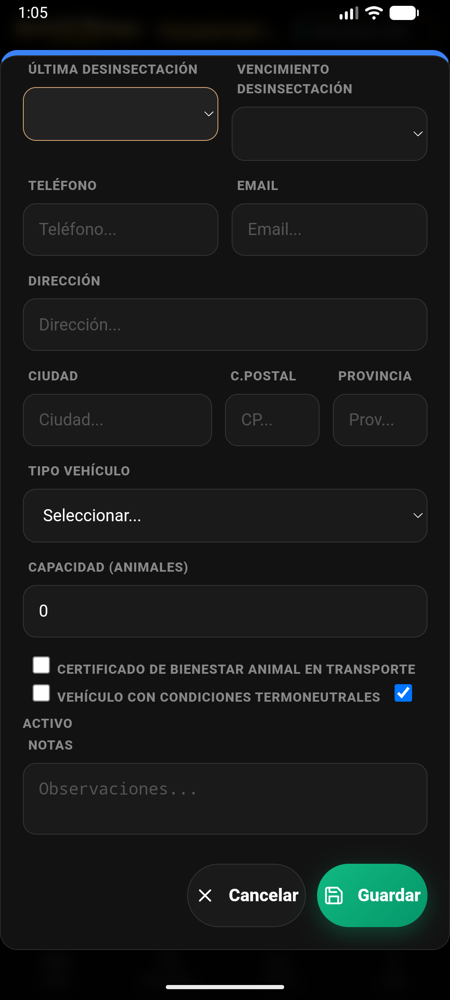
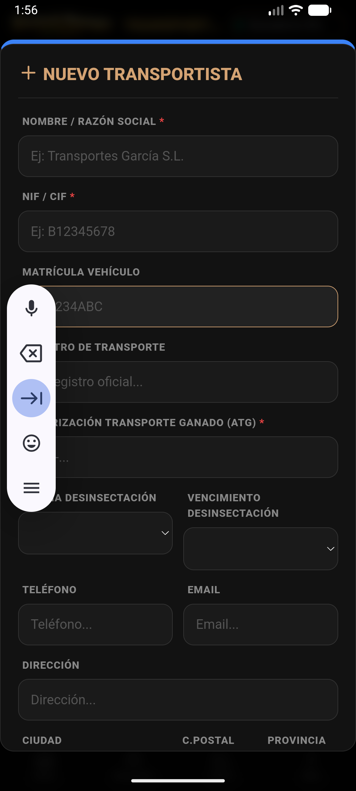

1. Acceso Rápido desde ExPro
Registra la producción de cada ordeño desde el Hub ExPro.

En ExPro (Modo Leche), pulsa el botón "Registrar Ordeño (L)".
- Asistente de Producción: Busca a la hembra en producción por crotal o selecciona el lote completo.
- Registro de Litros: Introduce la cantidad de leche obtenida en la sesión.
2. Control de Tanque y Calidad
Monitoriza la calidad higiénico-sanitaria de tu producción.

Formulario de entrada de litros con validación de modo.
- Registro Diario: Mantén un control de los litros acumulados en el tanque para compararlos con la recogida de cisterna.
- Analíticas: Los datos registrados aquí se cruzarán con los resultados de laboratorio en la sección de Comercialización.
Livestock Manager Premium · v4.8.0 · Guía de Control Lechero